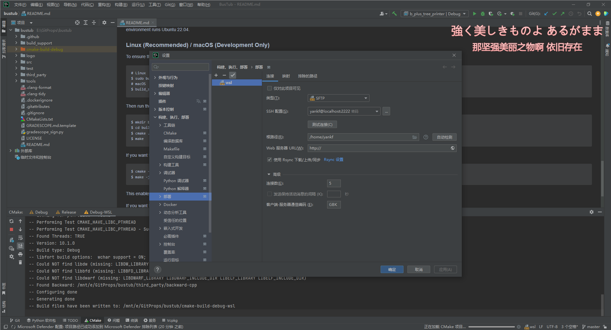
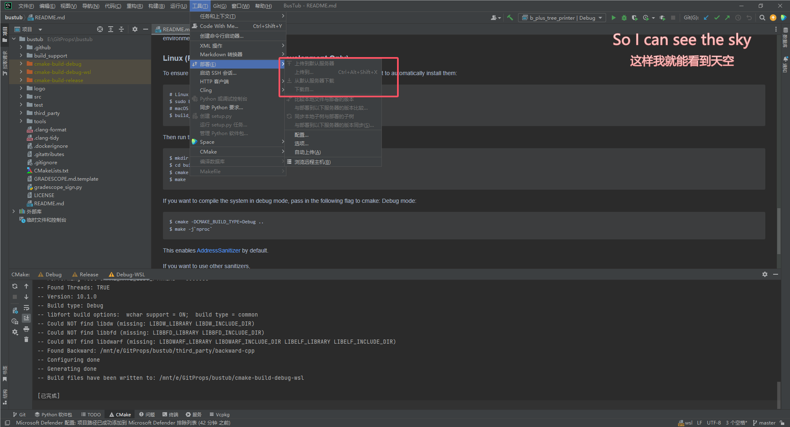

学弟突然对你发出了击剑邀请
TODO
看了前3P
课程总体概述
数据库管理系统的设计与实现，并不注重与实践和应用，注重如何去构建和设计。CMU 95-703和CMU 15-415更注重实践。
在这门课中需要自己构建数据库存储管理器，注意这里并不是完整的数据库系统。
面向disk的数据库管理系统，支持Volcano风格查询处理，支持插拔式API，这样可以替换系统中算法，使用不同索引数据结构或者日志格式和控制方案。
有五个作业：
- SQLlite数据库查询
HOW TO CHECK
CLion+WSL环境配置
https://www.jetbrains.com/help/clion/how-to-use-wsl-development-environment-in-product.html#wsl-tooclhain
https://blog.csdn.net/jiexijihe945/article/details/131894202
直接执行
1
| wget https://raw.githubusercontent.com/JetBrains/clion-wsl/master/ubuntu_setup_env.sh && bash ubuntu_setup_env.sh
|
或者将shell拷贝到WSL中执行
1
2
3
4
5
6
7
8
9
10
11
12
13
14
15
16
17
18
19
20
21
22
23
24
25
26
27
28
29
30
31
32
33
34
35
36
37
38
39
40
41
42
43
44
45
46
47
48
49
50
51
| #!/bin/bash
set -e
SSHD_LISTEN_ADDRESS=127.0.0.1
SSHD_PORT=2222
SSHD_FILE=/etc/ssh/sshd_config
SUDOERS_FILE=/etc/sudoers
# 0. update package lists
sudo apt-get update
# 0.1. reinstall sshd (workaround for initial version of WSL)
sudo apt remove -y --purge openssh-server
sudo apt install -y openssh-server
# 0.2. install basic dependencies
sudo apt install -y cmake ninja-build gcc clang gdb valgrind build-essential
# 1.1. configure sshd
sudo cp $SSHD_FILE ${SSHD_FILE}.`date '+%Y-%m-%d_%H-%M-%S'`.back
sudo sed -i '/^Port/ d' $SSHD_FILE
sudo sed -i '/^ListenAddress/ d' $SSHD_FILE
sudo sed -i '/^UsePrivilegeSeparation/ d' $SSHD_FILE
sudo sed -i '/^PasswordAuthentication/ d' $SSHD_FILE
echo "# configured by CLion" | sudo tee -a $SSHD_FILE
echo "ListenAddress ${SSHD_LISTEN_ADDRESS}" | sudo tee -a $SSHD_FILE
echo "Port ${SSHD_PORT}" | sudo tee -a $SSHD_FILE
echo "UsePrivilegeSeparation no" | sudo tee -a $SSHD_FILE
echo "PasswordAuthentication yes" | sudo tee -a $SSHD_FILE
# 1.2. apply new settings
sudo service ssh --full-restart
# 2. autostart: run sshd
sed -i '/^sudo service ssh --full-restart/ d' ~/.bashrc
echo "%sudo ALL=(ALL) NOPASSWD: /usr/sbin/service ssh --full-restart" | sudo tee -a $SUDOERS_FILE
cat << 'EOF' >> ~/.bashrc
sshd_status=$(service ssh status)
if [[ $sshd_status = *"is not running"* ]]; then
sudo service ssh --full-restart
fi
EOF
# summary: SSHD config info
echo
echo "SSH server parameters ($SSHD_FILE):"
echo "ListenAddress ${SSHD_LISTEN_ADDRESS}"
echo "Port ${SSHD_PORT}"
echo "UsePrivilegeSeparation no"
echo "PasswordAuthentication yes"
|
配置CLion Deployment

如果勾选rsync，需要另外配置，后续再说。
配置

已过时的内容
参考材料
教材是数据库系统概念第七版。
CMU 15-445: Database Systems中文简介
日程表
BusTub
[中文讲解] CMU-15445 数据库内核-Moody-老师
【双语字幕机翻+资料下载】CMU 14-455 | 数据库系统导论(2019·完整版)
【卡内基梅隆大学】CMU-15-445/645 Database Systems | 感觉是机翻 (Fall 2021)
https://www.bilibili.com/video/BV1rN411f7Ef
很全的公开课笔记Fall 2019
1. 关系模型
- 关系结构：可以理解为数据表table
- 数据完整性：
- 操纵和访问：